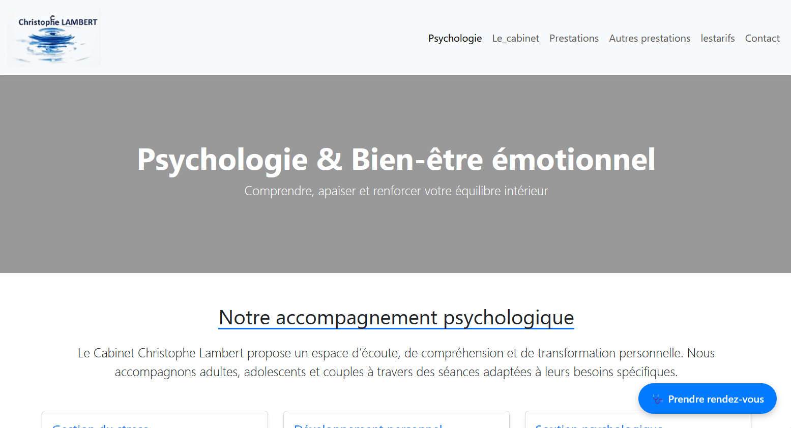
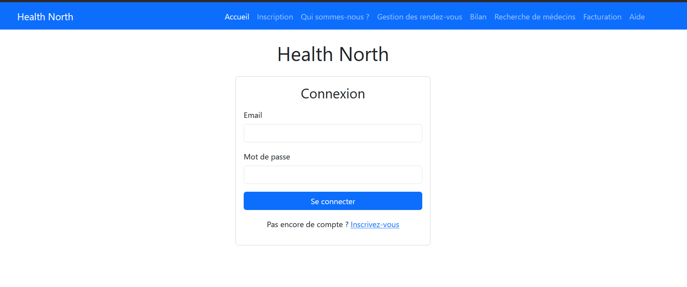
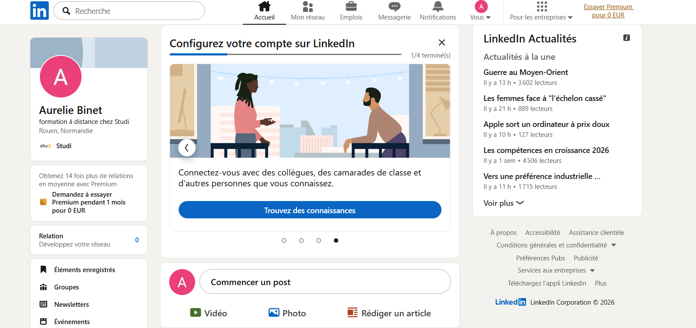

Recenser et identifier les ressources numériques : Windows 11
Exploiter des référentiels,normes et standards adoptés par le prestataire informatique:Je n'ai pas exploiterdes referentiels et des normes
Metttre en place et vérifier les niveaux d'habilitation associés à un service:Admin (user"medecin"),user (accès limité),le patient(acccès restreint)
Vérifier les conditions de la continuité d'un service informatique: je n'ai pas vérifié les conditions de la continuité d'un service informatique
Gérer les sauvegardes: je n'ai pas géré les sauvegardes
Vérifier le respect des règles d'utilisation des ressources numériques:Je n'ai pas vérifié le respect des règles d'utilisation des ressources numériques
COMPETENCE N°02Colllecter ,suivre et orienter les demandes:J'ai collecté les demandes pour les traiter
Traiter des demandes concernant less services réseaux et systèmes applicatifs:J'ai traité des demandes concernant les services réseaux et systèmes applicatifs.
Traiter des demandes concernant les applications:J'ai traité des demandes concernant les applications
COMPETENCE N°03Participer à la valorisation de l'image du cabinet médical et health North sur les medias numériques: j'ai crée un site web pour le cabinetet healthNorth



Référencer les services en ligne du cabinet medical et évaluer leur visibilité.Je n'ai pas référencé les services en ligne du cabinet médical et évalué leur visibilité
Participer à l'évolution d'un site web exploitant les données de l'organisation:J’analyse les besoins des utilisateurs et je propose des améliorations du site telle que une meilleure visibilité sur le web ,le référencement et la recherche par mots-clés;.
COMPETENCE N°04Analyser les objectifs et les modalités d'organisation dun projet:J’identifie les objectifs du projet (ce que le site doit faire).:
Planifier les activités:
Trello pour organiser l es tâches et les échéances du projet
Evaluer les indicateurs de suivi d'un projet et analyser les écarts:je n'ai pas évalué les indicateurs de suivi d'un projet et analysé les écarts
COMPETENCE N°05Réaliser des tests d'intégration et les modalités d'organisation d'un projet:il n'y a pas de tests d'intégration
Deployer un service:je n'ai pas déployé de service
Acccompagner les utilisateurs dans la prise en main d'un service:je n'ai pas acccompagné les utilisateurs dans la prise en main d'un service
COMPETENCE N°06Mettre en place son environnement d'apprentisssage personnel:Environnement d’apprentissage = outils, ressources, organisation (YouTube, docs, IDE…)
Mettre en place des outils et straégies de veille informationnelle: - Outils de veille : agrégateurs de flux RSS, alertes Google, réseaux sociaux professionnels (LinkedIn, Twitter…), plateformes de partage de connaissances (GitHub, Stack Overflow…) - Stratégies de veille : définir des thématiques de veille, planifier des sessions régulières de veille, partager les informations pertinentes avec la communauté professionnelle…
Gérer son idendité professionnelle:image, comportement, présence en ligne (CV , LinkedIn…)

Gérer son projet professionnel:Métier visé : Assistante informatique ou pourquoi pas développeur web, compétences à acquérir : développement web, gestion de projet, sécurité informatique
Développer son projet professionnel:
Assistante informatique ou pourquoi pas développeur web